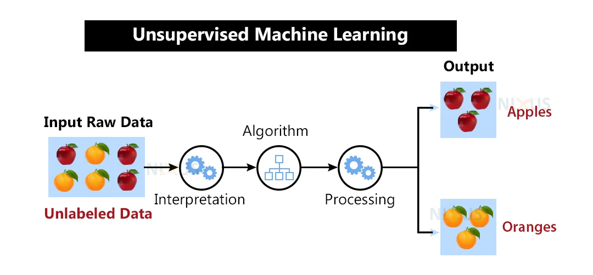

Machine learning is a subset of artificial intelligence and deep learning is a subset of machine learning. Machine learning teach machines to learn and make decisions based on data.
History of Machine Learning
Artificial intelligence gave birth to machine learning in the early 1950s and 1960s where researchers explored the idea of “teaching” machines to learn from experience.
In the 1950s, the term “thinking machine” was often used to describe a hypothetical device that could perform tasks that would normally require human intelligence. Alan Turing is one of the persons behind the foundation in the development of thinking machines, he was a mathematician and scientist.
In 1956 a conference held at Dartmouth College in Hanover, New Hampshire, USA called Dartmouth Summer Research Project. The conference was organized by John McCarthy, Marvin Minsky, Nathaniel Rochester, and Claude Shannon, who are often referred to as the “founding fathers of artificial intelligence. During the conference, the researchers proposed the creation of a machine that could learn from experience, reason, and understand natural language. This proposal became known as the Dartmouth proposal and was here that the term artificial intelligence was coined.
The period between 1956 and 1974 is often referred to as “the golden years” Research was well funded by government agencies, Technological advancements were made in computation and algorithms, Space exploration and prototypes of intelligent machines were built. Some of these machines include:
- Shakey the robot: A robot who could maneuver and decide how to perform tasks intelligently
- Eliza: an early chatterbot, could converse with people and act as a primitive therapist. Eliza remains a popular and influential program, and it has inspired many other chatbots and virtual assistants over the years.
These are some prototypes of intelligent machines were built between 1956 and 1974.
AI Winter
The period between 1974–1980 was the time of reduced funding and interest in the field of artificial intelligence (AI). Funding dried up and confidence in the field slowed. Some issues that impacted confidence included:
- Limitations. Compute power was too limited
- Combinatorial explosion. The amount of parameters needed to be trained grew exponentially as more was asked of computers, without a parallel evolution of compute power and capability.
- Paucity of data. There was a paucity of data that hindered the process of testing, developing, and refining algorithms.
Additionally, there were concerns about the ethical implications of AI, particularly in the areas of automation and job displacement. This led to public skepticism and fear about the potential negative impacts of AI on society. Despite these challenges, AI research continued to advance during the AI winter, and the field experienced a increase of interest and funding in the 1980s and 1990s.
How To Get started with machine learning
Firstly, you need to have your computer set up and ready to run notebooks locally.
Configure your machine, install Python in your system and setup a text editor for development.
Learn the basic of Python programming language or R and also create a Github account.
You should have a strong foundation in mathematics and statistics, particularly linear algebra, calculus, and probability theory.
Techniques of Machine Learning
Techniques of machine learning refer to the different methods and approaches used to train machine learning models to learn from data and make predictions. There many different techniques of machine learning some of them include: Supervised Learning, Unsupervised Learning, Semi-supervised Learning, Reinforcement Learning, Transfer Learning and many more:
Supervised Learning: This is type of machine learning where an algorithm learns from labeled data to make predictions or classifications about new, unseen data. Examples of supervised learning include predicting the price of a house based on its features such as size and location, or classifying an email as spam or not spam based on its content.

Unsupervised Learning: This is type of machine learning where the algorithm is trained on data without any supervision or labeled examples. Some popular unsupervised learning algorithms include k-means clustering, hierarchical clustering, principal component analysis (PCA), and autoencoders.

Semi-supervised Learning: Semi-supervised learning is a machine learning technique that lies between supervised and unsupervised learning. In supervised learning, a labeled dataset is used to train a model, while in unsupervised learning, the data is unlabeled, and the model learns to find patterns and structures in the data. In semi-supervised learning, the model is trained on both labeled and unlabeled data. Semi-supervised learning has been successfully applied to various applications, such as image classification, natural language processing, and speech recognition.
Conclusion
machine learning has a rich history that dates back to the mid-20th century when researchers first began exploring the concept of artificial intelligence. Over the decades, significant advancements in computing power and data storage have led to the development of sophisticated machine learning algorithms and techniques that can analyze vast amounts of data, learn patterns, and make predictions.
To get started with machine learning, one should have a strong foundation in mathematics and statistics, particularly linear algebra, calculus, and probability theory. Additionally, it is essential to have programming skills, particularly in languages such as Python, R, machine learning frameworks and libraries are written in these languages.
There are several techniques in machine learning, including supervised learning, unsupervised learning, reinforcement learning, and semi-supervised learning.
Have fun, Thank you!